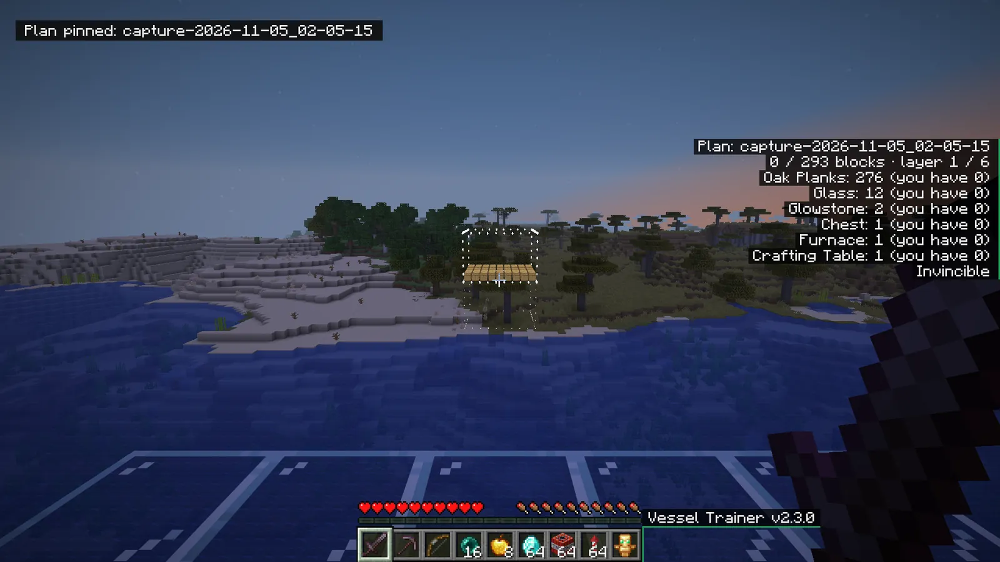
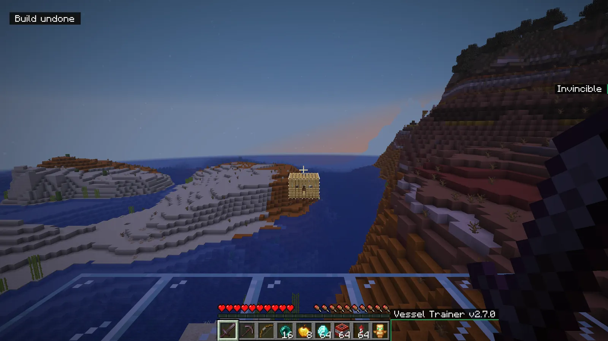
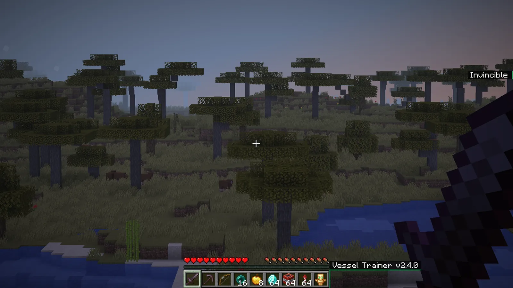

How it works
Guide
The basics, then every button in the trainer, one by one.
Controls
You can change all of these in Minecraft's controls. The menu also shows a description under each button.
Build in survival
A plan shows a structure as ghosts so you can build it yourself. Nothing is placed or given for you.
- Open Structures and pick a structure.
- Look at a block and use Plan: pin at aimed block.
- Place real blocks on the ghosts, layer by layer.
- The on-screen list shows your progress and the materials you need.
A wrong block is marked in red. The plan comes back when you reopen your world.


Capture and share
- Aim at two opposite corners with Capture: corner 1 and corner 2.
- Use Capture: save. Chests keep their contents.
- Share structure shows the .nbt file, ready to send.
- To show it to every player, send it from the Library page.
- To get other players' structures, open Online library, use Refresh the list, pick one, then Download structure.
- To import a file you received, drop it in the folder, then use Reload structures.
Command blocks are never placed. Only import files from people you trust.
Zoom
Hold C to zoom and release to go back. Pick x2, x4 or x8 in the settings. The camera steadies itself while zoomed.

Favorites and hotkeys
Keep your favorite buttons close. These keys can be changed in Minecraft's controls.
- On any button, press B: it joins Favorites, at the top of the menu.
- Press K, then a free key: the button works even with the menu closed.
- To remove a hotkey, press K, then Esc.
- Press N and type a few letters to find any button, in English or French.
Camera and cinema
Leave your character to explore and film. Singleplayer only.
- Turn on Free camera under Camera. Your movement keys fly the camera while your body stays still.
- Cinema mode smooths your movement and hides the interface. Open the menu to bring it back.
- Move around and use Add a path point several times.
- Pick a Path length, then Play the path: the camera glides through your points.
Powers
Pick a power under Powers, then use it with the R key.
- Portal: aim at a block and press R for the first door, then again elsewhere for the second. A third press starts over.
- Orbital beam: hold R. The beam follows your crosshair for as long as the key stays down.
- Energy shield: one press, and a bubble protects you from projectiles for 10 seconds.
Fun
Silly effects that break nothing. One button stops them all.
- Wheel of fortune picks a surprise for 20 seconds. Roulette mode starts a new one every 30 seconds.
- Disco party hangs a disco ball above you. Creatures dance around it.
- Chicken gun fires with the R key. Body swap puts you in the place of the aimed creature.
- To see your Giant head, switch to the outside view with F5 or use the free camera.
- Six submenus add plenty more: character, creatures, world, sounds, mini-games and items.
- Mini-games remove everything they built when they end. Avoid leaving the world during a game.
- Stop everything turns all of these off at once.
Banners
Change the image at the top of the menu. GIFs are animated.
- Open Settings, then pick vess-animated under Banner.
- To add your own, use Open banners folder and drop in your image or GIF.
- Use Reload banners, then pick it. The ideal size is 570 × 90.